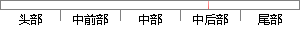

a,μ,∑) （4-8）
片段位置图

相似结果|
相似片段 1：其中相图成分范围为Al含量 30~40at.%，Mo含量为 0~30at.%。从图 4-8(a)和图 4-8(b) 可以看出，对于 1000℃的等温截面，在含Mo量相对较低的区域的α B2 B
相似片段 2：图 4-8为运用等值算法计算的双机系统模型参数，其中：图 4-8(a)表示等值电势 E1的变化曲线，图 4-8(b)表示等值电势 E2的变化曲线，图 4-8(c)表示等值电阻 R的变化曲线，图
相似片段 3：中间层 Zn时界面上部；(b):添加中间层 Zn时界面中部；(c):添加中间层 Zn时焊缝近铝侧；(d):同参数下未添加中间层 Zn时界面上部）图 4-8 分别是在旋转速度 375rpm、焊接速度
相似片段 4：H，678B )，P(K>-@：1<9-Q <, ) 2D: ) +/: ) ,?#96%$-’% E7>.-4>4-8?>@ B-+@/ 178/:,+/ ;< D-HD(18R+7 @>2+7
相似片段 5：另外，从六幅图改进方法的效果图中可以发现，当 p值增加，去噪结果有所提高。38图 4-8 1 图 4-8 2图 4-8 3 图 4-8 4图 4-8 5 图 4-8 639图 4-8 7 图 4-8
相似片段 6：0383）2: 0 3B0>> 68/38 ?0>>53（%* ?0383）2: A24- 65:./< 4-8 8I0B./04.2/ @8:.26 2; ’ E88K3 42 & B2/4-3C
相似片段 7： >H7>.-4>4-8?>@ B-+@/［F］) P?+7H< 2D-B4 8B D48K2R>2 >@28 -?.+24-H>4+/ -? 4D+ ,:7.+/ 21
相似片段 8：而在本次试验中细晶强化的作用明显，从而使 ZM6 镁合金焊接接头的抗拉强度有所提高。图 4-7 断口处缺陷Fig.4-7 Defect on fracture图 4-8 为不同焊接电流下焊接接头拉伸
相似片段 9：?[
|
※ 片段修改建议 ※
近似词参考：